Brief Drohobych History
Welcome to Drohobych, a city brimming with captivating tales and rich cultural heritage. Join us on a journey through time as we explore the intriguing history that has shaped this vibrant Ukrainian gem. Come, delve into the stories of Drohobych's past and uncover the secrets of its remarkable evolution. Dive in and experience history come alive!
12th
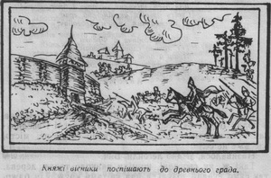
Foundation
Drohobych was founded as a trading settlement in the 12th century, initially serving as a center for commercial activities and artisanal crafts.
14th
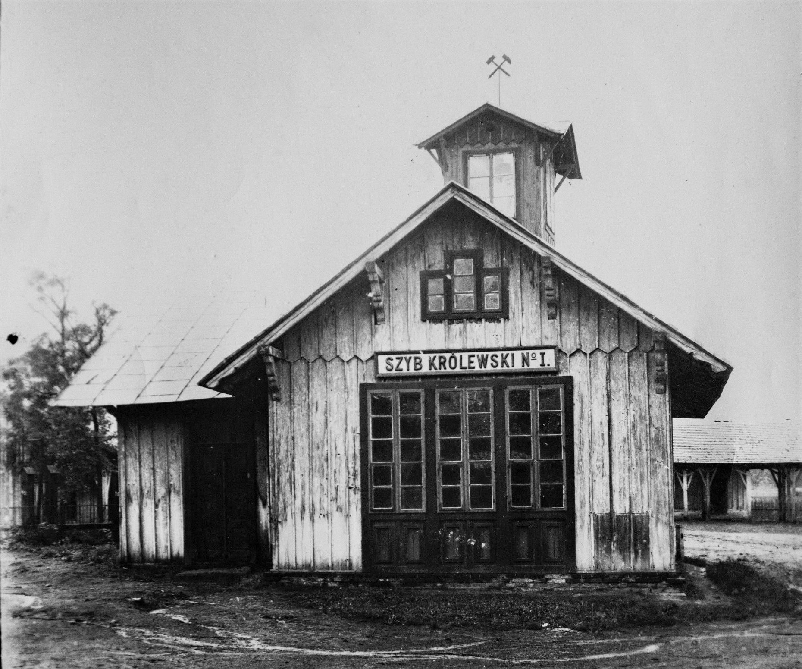
Salt Mining Industry Flourishes
During the 14th century, Drohobych's salt mining industry experienced significant growth, becoming one of the primary sources of wealth and economic activity in the region.
15th
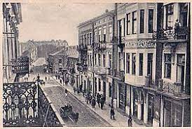
Cultural Renaissance
Drohobych experienced a cultural renaissance during the 15th century, marked by a flourishing of arts, literature, and intellectual pursuits, contributing to its reputation as a center of learning.
16th
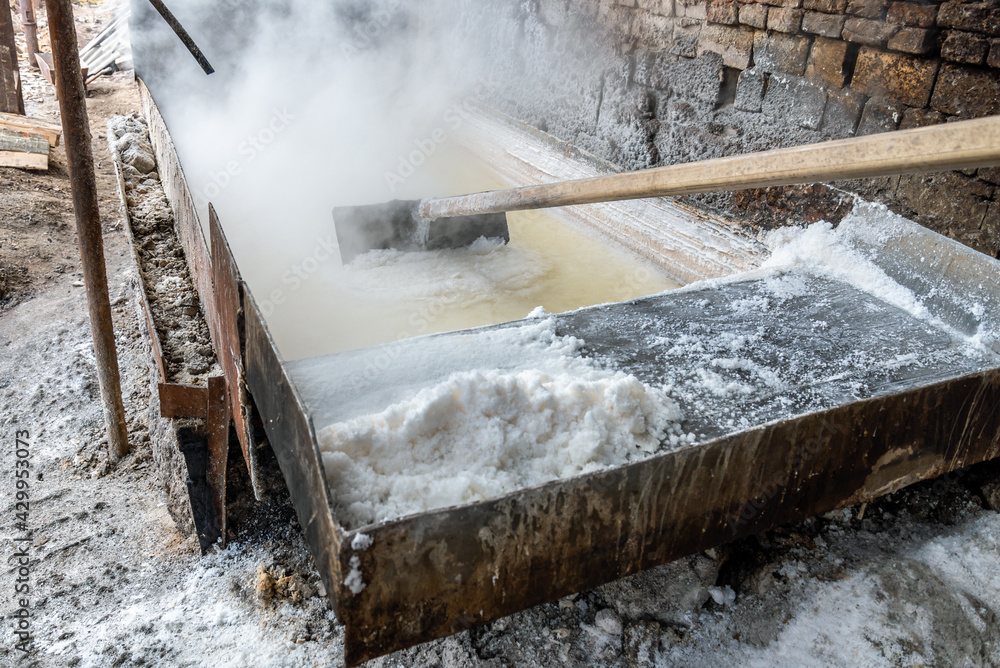
Golden Age of Trade
In the 16th century, Drohobych reached its peak as a center of trade, attracting merchants from across Europe and the Middle East and solidifying its position as a vital commercial hub.
18th
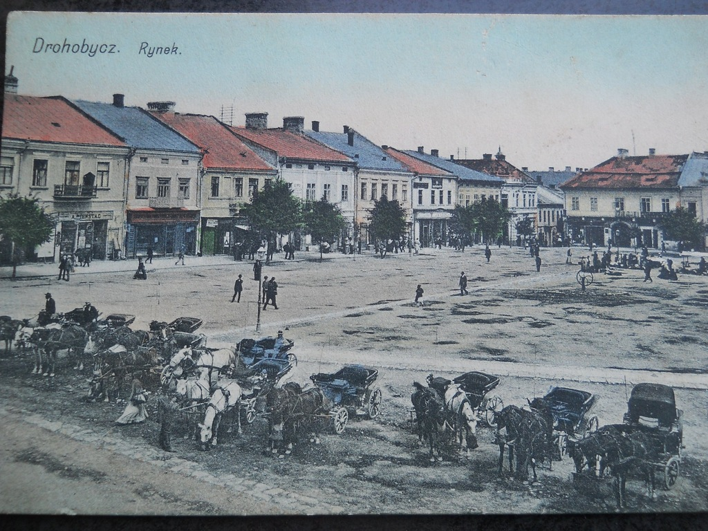
Partitions of Poland
The partitions of Poland in the late 18th century led to Drohobych coming under Austrian rule, altering its political landscape and administrative structures.
19th
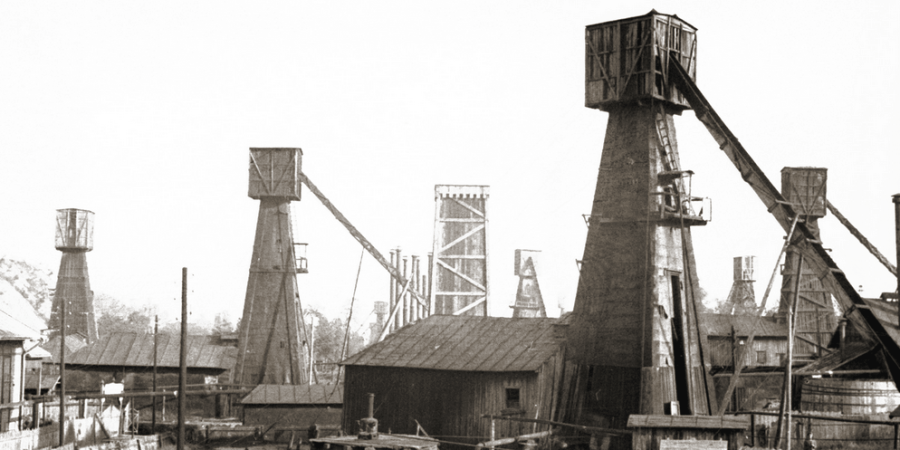
Galician Petroleum Industry
The discovery of oil and the development of the petroleum industry in Galicia, including Drohobych, during the 19th century transformed the region's economy and contributed to its industrialization.
1914
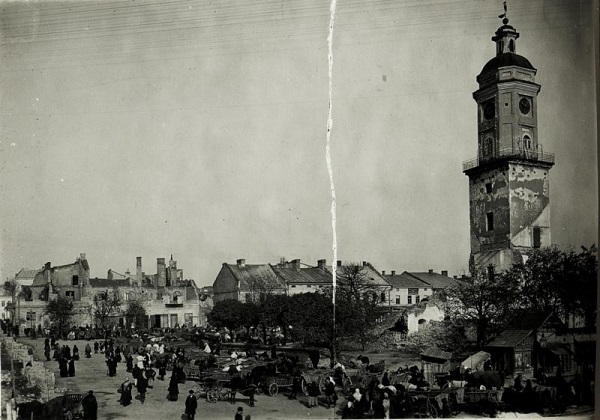
World War I
World War I and the upheavals of the early 20th century provided a backdrop for the emergence of Ukrainian national consciousness and aspirations for independence, with Drohobych playing a role in these developments.
1918
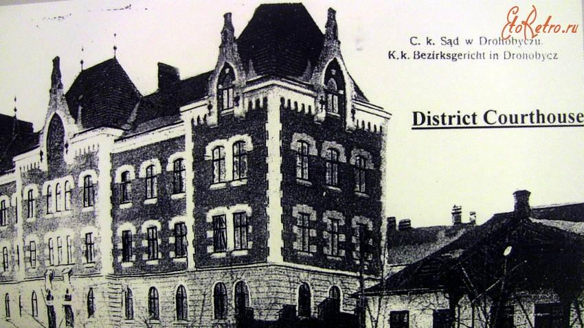
Interwar Period
The interwar period was a time of political and social change in Drohobych, as it experienced the challenges of nation-building and the complexities of interethnic relations.
1939
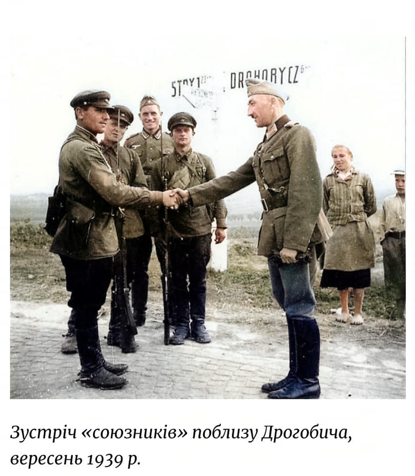
Soviet Occupation
Drohobych came under Soviet occupation following the Molotov-Ribbentrop Pact in 1939, leading to significant political and social transformations in the city.
1939
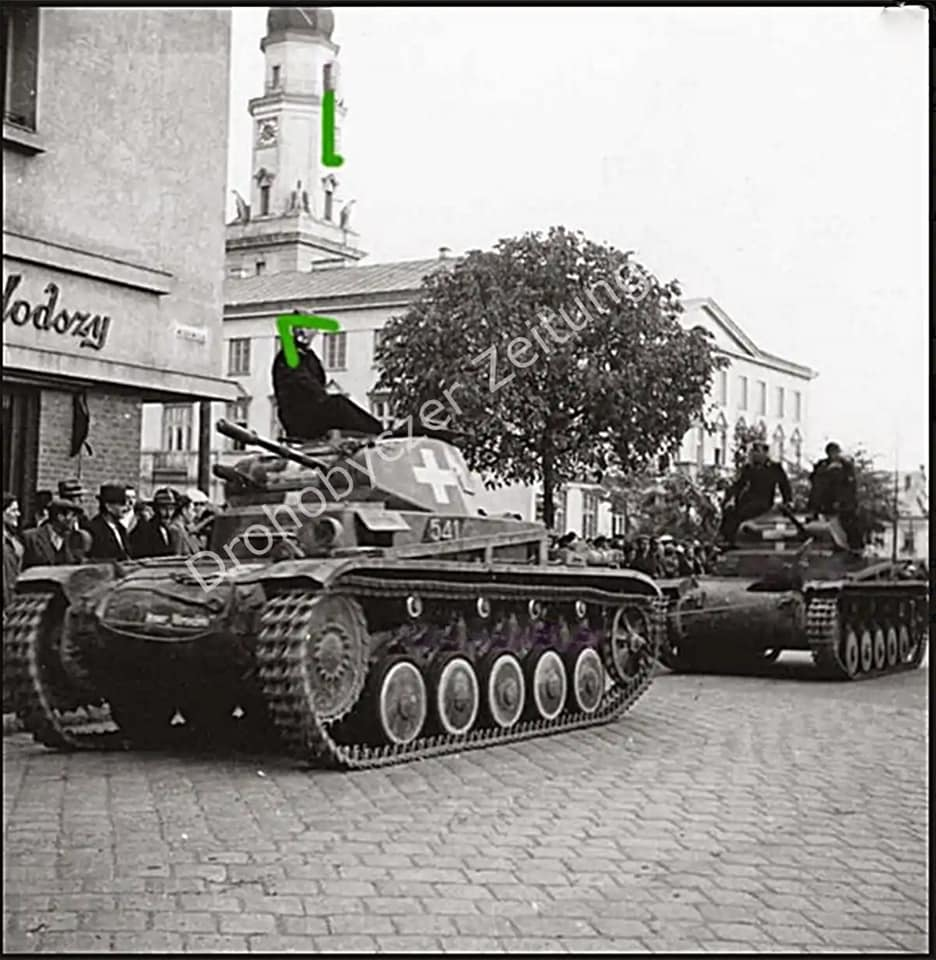
Holocaust and World War II
The Holocaust and World War II had devastating consequences for Drohobych's Jewish community, resulting in the loss of thousands of lives and the destruction of Jewish cultural institutions.
1944
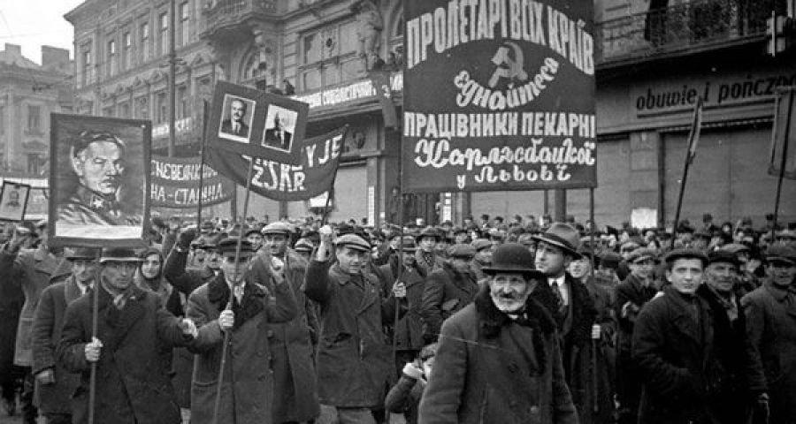
Soviet Period
Drohobych became part of the Ukrainian Soviet Socialist Republic in 1944, experiencing Soviet governance and the policies of collectivization and industrialization.
1991
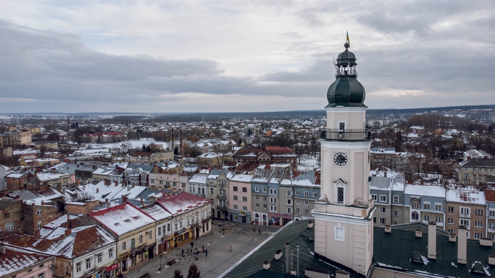
Independence of Ukraine
The independence of Ukraine in 1991 marked a new chapter in Drohobych's history, as it became part of an independent Ukrainian state, with opportunities and challenges associated with the transition to democracy and market economy.